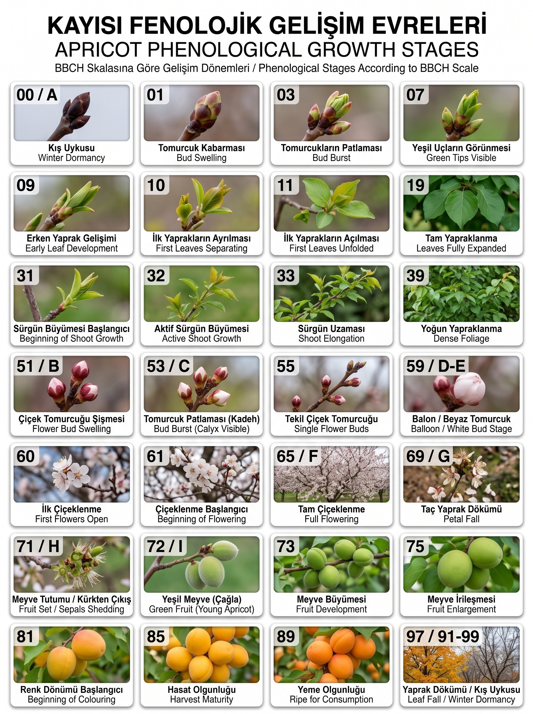

Direnç Kırmanın Temel Kuralı: Doğru Zamanda Doğru FRAC / IRAC Grubu
Kayısıda en yıkıcı fungal hastalık olan Çiçek Monilyası (Monilinia laxa) ve Yaprak Delen / Çil (Stigmina carpophila) ile ana zararlılar olan Şeftali Güvesi (Anarsia lineatella) ve Erik Koşnili mücadelesinde kritik evre kaçırılmamalıdır. Aynı kimyasal etki grubunun (örn. DMI Triazoller veya Diamidler) ardışık uygulanması ilaca karşı hızlı direnç gelişmesine yol açar.
1. Uygulama: Sonbahar & Kış Uykusu
Yaprak dökümü %75-80 olduğunda ve kış uykusu dönemi
Hedef Hastalık / Zararlı:
Yaprak Delen / Çil (Stigmina carpophila), Bakteriyel Kanser ve Dal Yanıklığı (Pseudomonas syringae), Kanser yaraları.
Önerilen Etken Madde:
%40 Metalik Bakıra Eşdeğer Tribazik Bakır Sülfat veya %1.5-2 Bordo Bulamacı
2. Uygulama: Tomurcuk Patlaması
Geç kış - erken ilkbahar, tomurcuklar kabarıp patlarken (gözler uyanırken)
Hedef Hastalık / Zararlı:
Yaprak Delen (Çil) 1. İlaçlaması • Erik Koşnili (Sphaerolecanium prunastri) • Kabuklu Bit kışlayan formları.
Önerilen Etken Madde & Ürünler:
3. Uygulama: Pembe / Balon & Kadeh Dönemi
Çiçek tomurcukları kabarıp pembe/beyaz taç yapraklar göründüğünde (%5-10 çiçeklenme)
Hedef Hastalık / Zararlı:
Çiçek Monilyası 1. İlaçlama • Yaprak Delen (Çil) 2. İlaçlama (Kadeh dökülürken / çanak yaprak belirirken).
Önerilen Etken Madde & Ürünler:
4. Uygulama: Tam Çiçeklenme (Çiçek Monilyası 2. İlaçlama)
Ağaçtaki çiçeklerin %50 - %70'i tamamen açtığı dönem (En Tehlikeli Dönem)
Hedef Hastalık:
Çiçek Monilyası (Monilinia laxa) - Mantar sporları açık çiçeklerin tepecik (stigma) ve dişicik borusundan girerek odun dokusuna ilerler ve dal kurumalarına yol açar.
Önerilen Birinci Sınıf Ürünler:
Signum WG (%26.7 Boscalid + %6.7 Pyraclostrobin - 100 g/100 L) Bellis (%25.2 Boscalid + %12.8 Pyraclostrobin - 40 g/100 L) Lusen SC 500 (Fluopyram + Trifloxystrobin - 25 ml/100 L)
Revyona (75 g/l Mefentrifluconazole - 100 ml/100 L - FRAC 3) Orius 25 EW / Toppel 25 WP (Tebuconazole - 60 ml/100 L)
Serenade SC (Bacillus amyloliquefaciens QST 713 - FRAC BM02 - PHI 0 gün)
5. Uygulama: Taç Yaprak Dökümü & Kürkten Çıkış
Çiçek taç yaprakları dökülüp küçük çağla meyveler kadehten (kürkten) sıyrıldığında
Hedef Hastalık / Zararlı:
Yaprak Delen (Çil) 3. İlaçlama • Monilya 3. İlaçlama (Yağışlı iklimde) • Erik Koşnili (Hareketli Nimfler) • Şeftali Gövde Kanlı Biti.
Önerilen Etken Madde & Ürünler:
Switch 62.5 WG (%37.5 Cyprodinil + %25 Fludioxonil - 35 g/100 L) Fizion (%50 Trifloxystrobin - 12.5 g/100 L - FRAC 11) Superprex 500 FW / Dodine (%65 Dodine - 80-100 ml - FRAC U12)
Breaker (240 g/l Sulfoxaflor - 25 ml/100 L - IRAC 4C) Admiral (Pyriproxyfen - 50 ml - IRAC 7C) İnsektisit (240 g/l Tau-fluvalinate - Kanlı bit için)
6. Uygulama: Yeşil Meyve & İrileşme (Güve 1. Döl)
Çağla dönemi ve meyve çekirdeğinin sertleşip meyvenin irileşme evresi
Hedef Hastalık / Zararlı:
Şeftali Güvesi (Anarsia lineatella) • Doğu Meyve Güvesi (Grapholita molesta) 1. Döl Larvaları • Meyve Çil ve Pas Lekeleri.
Önerilen Etken Madde & Ürünler:
Coragen 20 SC (200 g/l Chlorantraniliprole - 20 ml/100 L - IRAC 28) Bisect / Ryno-A / Billboard (200 g/l Chlorantraniliprole - 20 ml)
Regev (400 g/l Tea Tree Oil + 200 g/l Difenoconazole - 25 ml/100 L) Merpan (%80 Captan - 200 g - FRAC M04)
7. Uygulama: Renk Dönümü & Hasat Öncesi Koruma (Meyve Monilyası)
Meyveler sararmaya ve olgunlaşma rengine dönmeye başladığında (Hasada 1-14 gün kala)
Hedef Hastalık / Zararlı:
Meyve Monilyası (Monilinia fructigena / laxa) - Hasat sırasında ve depolamada kahverengi çürüklük.
Güve 2. Döl Larva Vuruğu (Geç olgunlaşan çeşitlerde).
Gıda Güvenliği & İhracat Toleransı:
Bu evrede atılacak ilaçların hasat öncesi bekleme süresi (PHI) kesinlikle hasat tarihini geçmemelidir. Kalıntı analizi riski taşımayan maddeler seçilmelidir.Onaylı Kısa PHI'lı Ürünler:
| Ticari Ürün | Etken Madde | Doz (100 L) | FRAC | PHI |
|---|---|---|---|---|
| SPARK | %50 Fenpyrazamine | 50 g | FRAC 17 | 1 GÜN |
| REVYONA | 75 g/l Mefentrifluconazole | 100 ml | FRAC 3 | 3 GÜN |
| LUSEN SC 500 | Fluopyram + Trifloxystrobin | 25 ml | FRAC 7+11 | 3 GÜN |
| SERENADE SC | Bacillus amyloliquefaciens | Dozaj etiketi | FRAC BM02 | 0 GÜN |
| SIGNUM WG | Boscalid + Pyraclostrobin | 100 g | FRAC 7+11 | 7 GÜN |
Direnç Mekanizması ve Rotasyon Prensipleri
Kimyasal mücadelede en sık düşülen hata, ticari ilaç ismi değiştiğinde etken maddenin ve etki mekanizmasının da değiştiğinin sanılmasıdır. Aşağıdaki gruplandırma tablosu, kayısıda kullanılan etken maddelerin biyokimyasal etki yerlerini ve güvenli kullanım sınırlarını gösterir.
Fungisit Direnç Grupları (FRAC)
| Grup | Kimyasal Sınıf & Etki Yeri | Etken Maddeler (BKÜ) | Direnç Riski & Kural |
|---|---|---|---|
| FRAC 3 | DMI (Sterol Biyosentez İnhibitörü) | Tebuconazole, Mefentrifluconazole, Difenoconazole | Orta Risk: Sezonda en fazla 2 kez. Asla üst üste atılmaz. |
| FRAC 7 | SDHI (Süksinat Dehidrogenaz İnhibitörü) | Boscalid, Fluxapyroxad, Fluopyram, Isopyrazam | Orta-Yüksek Risk: Çoğunlukla QoI ile kombine kullanılır. Sezonda max 2. |
| FRAC 9 | Anilinopirimidin (Metiyonin Biyosentezi) | Cyprodinil (Chorus, Danua, Koranil) | Orta Risk: Soğuk bahar günlerinde etkilidir. Max 2 uygulama. |
| FRAC 11 | QoI (Strobilurin - Hücresel Solunum) | Pyraclostrobin, Trifloxystrobin | Yüksek Risk: Tek başına monilyada tek taraflı direnç oluşturabilir. |
| FRAC 17 | Hidroksianilid / SBI Sınıf III | Fenpyrazamine (Spark) | Düşük-Orta: Diğer gruplarla çapraz direnci yoktur. Hasat öncesi kurtarıcıdır. |
| FRAC M | Multi-site (Çok Noktadan Temas Etkili) | Bakır (M01), Ziram (M03), Captan (M04), Dithianon (M09) | DİRENÇ RİSKİ SIFIR: Direnç gelişmez. Tank karışımlarında direnç kırıcıdır. |
İnsektisit Direnç Grupları (IRAC)
| Grup | Etki Mekanizması | Etken Maddeler (BKÜ) | Zararlı & Kural |
|---|---|---|---|
| IRAC 28 | Ryanodin Reseptör Modülatörleri (Diamidler) | Chlorantraniliprole (Coragen, Bisect, Ryno-A) | Şeftali & Doğu Meyve Güvesi: Aynı zararlı dölüne karşı max 1-2 kez uygulanmalıdır. |
| IRAC 7C | Juvenil Hormon Taklitçileri (JHA) | Pyriproxyfen (Admiral) | Erik Koşnili & Kabuklu Bit: Gömlek değiştirmeyi önler. Kış sonu veya nimf çıkışında 1 kez. |
| IRAC 4C | Nikotinik Asetilkolin Reseptör Agonisti (Sulfoksiminler) | Sulfoxaflor (Breaker) | Koşnil & Emici Zararlılar: Neonikotinoid direncini kırmak için geliştirilmiştir. |
| IRAC 3A | Sodyum Kanal Modülatörleri (Piretroidler) | Tau-fluvalinate (İnsektisit) | Kanlı Bit & Yaprakbitleri: Arılara dikkat edilmeli, çiçek sonu atılmalıdır. |
Direnç Korumak İçin Doğru Davranışlar (Altın Kurallar):
- Pembe tomurcukta FRAC 9 (Cyprodinil) kullandıysanız, tam çiçeklenmede FRAC 7+11 (Signum/Bellis) veya FRAC 3 (Revyona) tercih edin.
- Sezonda tek bir mantar grubunu (örn. yalnızca Triazol veya yalnızca SDHI) 2 defadan fazla tekrarlamayın.
- Güve mücadelesinde ilk döle IRAC 28 attıysanız, gerekirse ikinci döle farklı sınıftan bir insektisit planlayın.
- Tank karışımlarına temas etkili koruyucular (Captan, Dithianon vb.) eklemek direnç gelişimini geciktirir.
Kaçınılması Gereken Hatalar:
- Farklı marka adı taşıyan fakat aynı aktif maddeye sahip ilaçları (örn. Toppel sonrası Orius; her ikisi de Tebuconazole) üst üste kullanmak.
- Çiçeklenme başladığında (BBCH 60 sonrası) bakırlı preparat atmak (Çiçek yakması ve fito-toksisite yapar).
- Etiket dozunun altında (eksik) ilaç kullanarak zararlı veya mantarda bağışıklık geliştirmek.
- Hasat aralığı (PHI) uzun olan ilaçları renk dönümünden sonra uygulamak (İhracat ve sofralık analizinde kalıntı çıkar).
BKÜ Dashboard Kayısı İlaç Arama & Doz Rehberi
Sistem veritabanındaki 182 adet resmi ruhsatlı kayısı ilacı arasında anlık filtreleme yapın.
| Ticari Adı | Hedef Hastalık / Zararlı | Aktif Madde & Oran | Tavsiye Dozu | PHI (Gün) | Grup / Kod | Detay |
|---|
bku.dashboard.html / T.C. Tarım ve Orman Bakanlığı Ruhsat Verisi
Tank Karışımı Uyumluluğu, Fitotoksisite ve Mevzuat Uyarıları
Su Kalitesi & pH
İlaçlama suyunun pH'sı etkinliği doğrudan belirler:
- İdeal su pH aralığı 5.8 – 6.5 olmalıdır.
- Alkali sularda (pH > 7.5) özellikle Chlorantraniliprole ve Cyprodinil aktifleri hidroliz olarak etkinliğini kaybeder. Tank hazırlığında pH düzenleyici (asitleyici) kullanılmalıdır.
Fitotoksisite (Yakma) Riskleri
Çiçek ve taze yaprak dokularını korumak için:
- Bakır: Pembe tomurcuktan sonra (BBCH 59 sonrası) bakırlı preparat atmayınız. Çiçek tepeciğini ve taç yaprakları yakar.
- Yağ - Kükürt Ayrımı: Kışlık yağlar veya yazlık beyaz yağlar ile kükürtlü bileşikler arasında en az 21-30 gün ara olmalıdır.
Mevzuat & Yasaklı Aktifler
Veritabanındaki yasaklı maddeler listesine göre:
- İminoctadine tris (albesilate): (Belico, Bellkute) yasaklı aktifler listesindedir; yerine Signum, Revyona veya Chorus tercih edilmelidir.
- Malathion: Organofosfatlı gruptur. AB ve yeni ruhsat kısıtlamaları nedeniyle iç kurdunda seçici Diamidler (Coragen) tercih edilmelidir.
Doğru Tank Karışım Sırası (Sıralama Kuralı):
- Önce tanka suyun en az yarısı doldurulur ve karıştırıcı çalıştırılır.
- Varsa Su Düzenleyici / pH Asitleyici eklenir.
- Suda Dağılabilen Granüller (WG) ve Islanabilir Tozlar (WP) eklenir ve tamamen çözünmesi beklenir.
- Süspansiyon Konsantreler (SC) ve Akıcı Konsantreler eklenir.
- Emülsiyon Konsantreler (EC) eklenir.
- Varsa en son Yayıcı-Yapıştırıcı eklenir ve tank suyla tamamlanır.